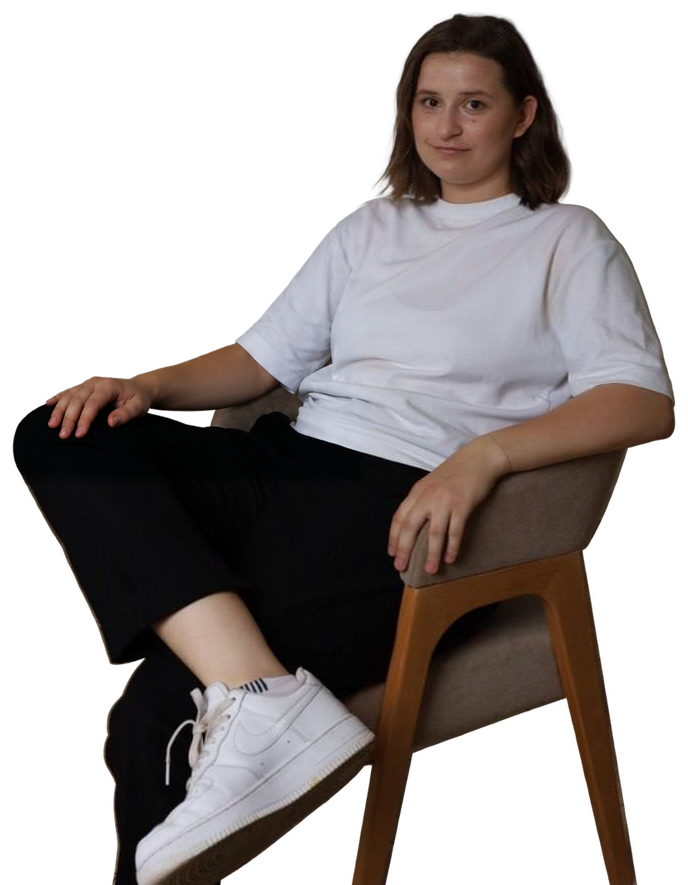

Москва · Системный анализПортфолио
АринаФилатова
Системный аналитик
Требования, процессы и данные.
Проекты системного аналитика.
Обо мне
Системный анализ
и опыт управления
проектами
Опыт и образование
Мой профессиональный путь
Выбери этап на таймлайне, чтобы посмотреть задачи, результаты или программу обучения.
Работа
Образование и курсы
Методы и инструменты
Навыки аналитика
Нажми на навык, чтобы посмотреть, как он связан с моими задачами и материалами портфолио.
Инструменты и подходы
Мой подход
Что я делаю
От изучения задачи до согласованных материалов для команды разработки.
Портфолио
Мои работы
Требования, BPMN, модели данных, интерфейсы и приёмка. Все представленные работы выполнены мной самостоятельно.
Ничего не найдено
Попробуй другое слово или сбрось фильтры.
На связи
Обсудим
вашу задачу?
Готова рассказать о своём опыте, показать материалы и обсудить работу в команде.
Написать в TelegramEmailarina.filatova.2014@bk.ruTelegram@arina_filatova_07Телефон+7 (985) 616-17-95
Москва. Удалённо, гибрид или работа в офисе.